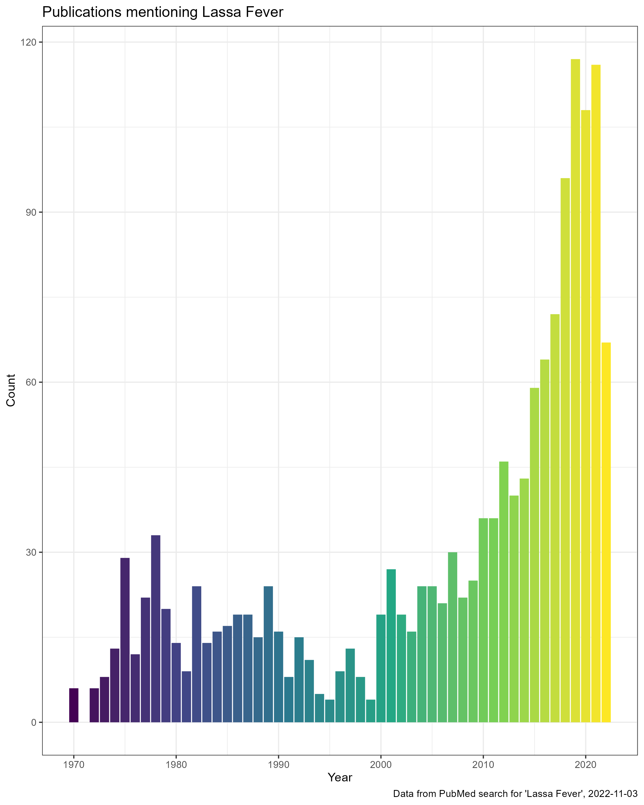
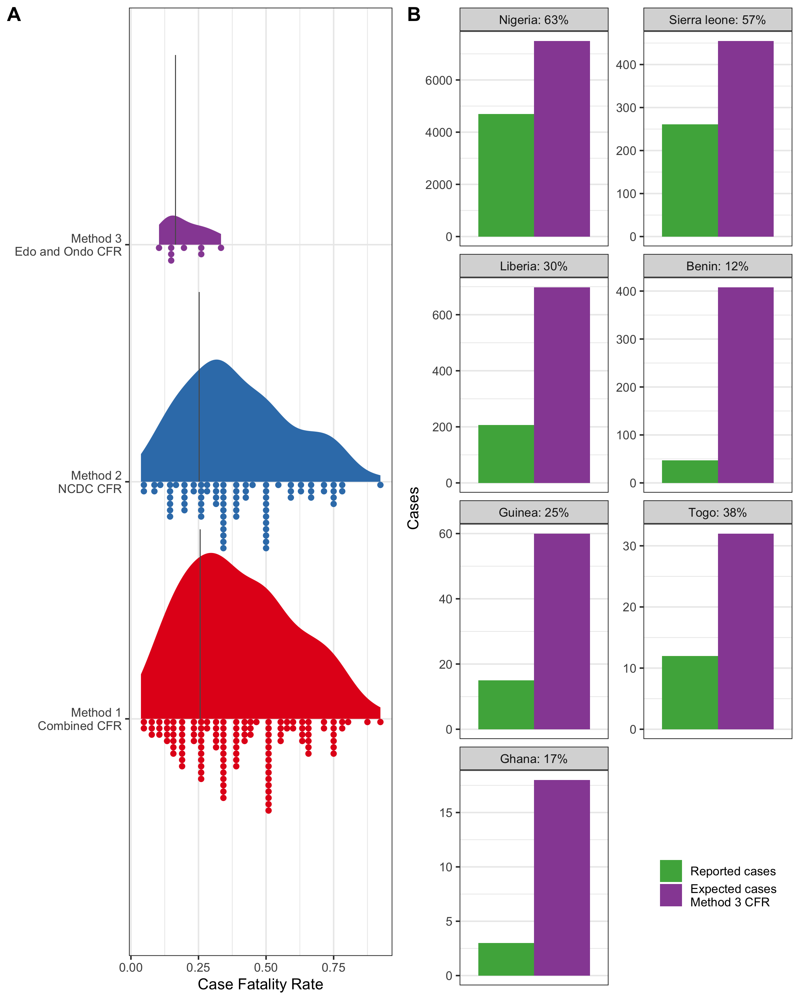

Article
The article is in press with International Health, when it is available I will post the link here.
Introduction: Lassa Fever is a viral haemorrhagic fever endemic to eight West African countries. Symptomatic disease is expected to occur in 20% of those infected, transmission typically occurs from viral spillover from rodent hosts. The combination of limited access to diagnostics and access to healthcare means the true burden of this disease is unknown.
Methods: The case fatality rate among confirmed, probable, and possible cases of Lassa Ffever in endemic regions is expected to be around 15%. Here, annual reported cases and deaths have been used to estimate the case fatality to rate, using three subsets of available data, to understand the scale of under-reporting of severe human cases.
Results: 38 records of Lassa Fever reported cases and deaths were produced comprising 5,230 reported cases and 1,482 reported deaths from 7 countries. The estimated case fatality rate ranges from 16.5-25.6% (S.D. = 11.5-32.2%). The expected number of severe cases between 2012-2022 is 8,995 with current reported numbers 58% of expected.
Conclusion: This analysis highlights current uncertainty and systemic under-reporting of the morbidity and mortality burden Lassa Ffever in its endemic region and must be considered when discussing the epidemiology of this neglected tropical disease.
Lassa Fever is receiving increasing amounts of research funding due to concerns about pandemic emergence, increasing numbers of outbreaks, the drive to develop novel therapeutics and developing human vaccines. This has led to an increasing number of publications on this viral infection. These publications face the same challenge when discussing the number of cases. Current estimates are based on research conducted in the 1970-80s which have not been updated to include changes in human populations in West Africa, alongside other factors such as land use change. A recent publication by (Basinski et al. 2021) attempted to estimate updated numbers of infections across the region, suggesting between 900,000-4.4 million infections per year.

A further complication is the conversion of infections to clinical cases. The WHO reports that around 80% of acute infections are asymptomatic, the evidence behind this is limited. I was interested in seeing if we can use information about the reported Case Fatality Rate to estimate the number of clinical cases that may be going un-reported across the region. I have maintained a dataset on the number of reported of Lassa Fever cases across the region from epidemiological report, the sources that contribute to this dataset do not provide any estimates on the proportion of “true” cases that are detected which I believe results in significant undercounting.

This assessment will be based on several assumptions:
1: The reporting of deaths is more complete than the reporting of cases.
2: The proportion of confirmed cases that die from the disease does not vary drastically by country or year.
3: Reported cases are all clinical/symptomatic cases and none have been identified from asymptomatic infections.
These assumptions are not likely to be met and therefore this estimate of under-reported cases is crude. For example, the probability of a death being accurately attributed to Lassa Fever will likely vary by location and time period. Certain regions, based on prior experience of outbreaks, may be more likely to suspect Lassa Fever as a cause of death and so may be more likely to perform testing. The historic pattern of a peak in Lassa Fever cases in the early months of the year in Nigeria may introduce a temporal bias. Clinicians may be more likely to suspect Lassa Fever during these periods than at other times of the year and so testing may be dependent on season. To understand these patterns we would need information on proportion of tests that are positive. To my knowledge this data is not available.
It is unlikely that Case Fatality Rate does not vary spatially or temporally. Health care access and services differ across the region. The access to care for Lassa Fever is potentially greater in regions with specialised services, such as Irrua Teaching Hospital, Nigeria and the Lassa Fever ward at Kenema General Hospital, Sierra Leone. This may alter the outcomes of clinical cases. An example of temporal factors that may alter CFR include the ongoing COVID-19 pandemic. During lockdowns and periods of high case rates the time to diagnosis for symptomatic individuals may be prolonged and therefore outcomes may be worse, leading to an increased CFR.
Improvements in Lassa Fever awareness have resulted in changes to how cases and contacts are identified. Previously individuals with severe symptoms who did not respond to anti-malarial and anti-bacterial therapy would be tested for Lassa Fever. Improvements in diagnostic capacity, particularly in Nigeria have now resulted in testing being used for symptomatic contacts of confirmed cases. These individuals would previously have not been diagnosed and so including them in confirmed cases may lower the CFR from historical levels.
Further research will be required to understand the true degree of under-reporting of symptomatic Lassa Fever cases. Despite this, I think this work should help to encourage researchers consider the biases behind reported case numbers.
A dataset of reported deaths and cases for Lassa Fever was produced from several sources including ProMED mail, WHO weekly bulletins, Nigeria CDC Lassa Fever situation reports and academic publications. This dataset, with sources is available here. I took three approaches to estimating the CFR from these data.
1: Across all records, the number of reported deaths was divided by the number of reported cases. If the number of deaths exceed the number of cases, the number of suspected cases was used in place of cases.
2: Across all Nigeria CDC data, the number of reported deaths was divided by the number of reported cases. If the number of deaths exceed the number of cases, the number of suspected cases was used in place of cases.
3: Using only data from Edo and Ondo states, as these historically have the greatest number of reported cases and greatest access to diagnostic capacity. The number of reported deaths was divided by the number of reported cases.
From these CFRs for each record values of 0% and 100% were removed and a weighted mean CFR was calculated based on the number of reported deaths.
These weighted mean CFRs were then used to calculate the proportion of cases for each country that were un-reported based on the reported number of deaths.
The estimated CFRs for method 1 and 2 did not differ importantly, producing estimates around 25%. Relying only on data from Edo and Ondo states, in method 3 produced an estimate of 16.2%, this is likely closest to the true CFR of Lassa Fever following development of severe symptoms. Using this value the degree of under-reporting was found to differ by country. The greatest under-reporting was from Liberia, Benin, Guinea and Ghana. However, Nigeria, Liberia, Benin and Sierra Leone are most likely to be the countries under-reporting the greatest number of severe infections. This difference arises as these latter countries have the highest number of outbreaks and deaths attributed to Lassa Fever.

Studies, particularly epidemiological reports, must incorporate a degree of uncertainty when reporting the number of cases. Inclusion of test positivity in reports and how this may vary over time and location would be vital to understand the scale of under-reporting. If this information is available and epidemiologists are interested in exploring this please do not hesitate to get in touch.
The pre-print of this article following reviewer comments is available from Qeios.
The article is in press with International Health, when it is available I will post the link here.
@article{simons2022,
author = {David Simons},
title = {Lassa {Fever} Cases Suffer from Severe Under-Reporting Based
on Reported Fatalities.},
journal = {Qeios},
date = {2022-11-02},
url = {https://doi.org/10.32388/R0Y17E.2},
doi = {10.32388/R0Y17E.2},
langid = {en},
abstract = {**Introduction:** Lassa Fever is a viral haemorrhagic
fever endemic to eight West African countries. Symptomatic disease
is expected to occur in 20\% of those infected, transmission
typically occurs from viral spillover from rodent hosts. The
combination of limited access to diagnostics and access to
healthcare means the true burden of this disease is unknown.
**Methods:** The case fatality rate among confirmed, probable, and
possible cases of Lassa Ffever in endemic regions is expected to be
around 15\%. Here, annual reported cases and deaths have been used
to estimate the case fatality to rate, using three subsets of
available data, to understand the scale of under-reporting of severe
human cases. **Results:** 38 records of Lassa Fever reported cases
and deaths were produced comprising 5,230 reported cases and 1,482
reported deaths from 7 countries. The estimated case fatality rate
ranges from 16.5-25.6\% (S.D. = 11.5-32.2\%). The expected number of
severe cases between 2012-2022 is 8,995 with current reported
numbers 58\% of expected. **Conclusion:** This analysis highlights
current uncertainty and systemic under-reporting of the morbidity
and mortality burden Lassa Ffever in its endemic region and must be
considered when discussing the epidemiology of this neglected
tropical disease.}
}